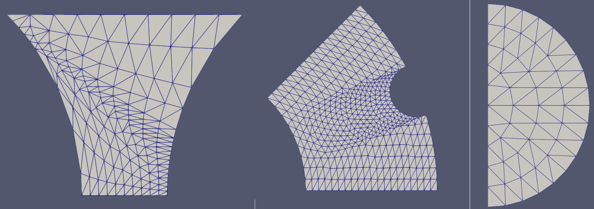

FillBetweenPointVectorsTools Namespace
FillBetweenPointVectorsTools contains tools that can be used to generate a triangular element transition layer mesh to connect two given curves (i.e., vectors of points) in the XY plane. It was originally developed for PeripheralModifyGenerator of the Reactor module. As these tools may also be useful for other applications, they are made available in this namespace. In this document, the algorithm of the tools are described.
Fundamentals
This tool set was designed to create a mesh for a transition layer. A transition layer accommodates the shape and node placement of two pre-existing boundaries and fills the gap between them with elements. The most important input data needed to generate a transition layer is the node positions of the two boundaries. The generated mesh conforms to these two boundaries and connects the end nodes of each boundary using a straight line, as indicated in Figure 1.
Figure 1: A schematic drawing showing the fundamental functionality of the FillBetweenPointVectorsTools
Single-Layer Transition Layer Meshing
The most straightforward solution is to create a single layer of triangular elements as the transition layer. A triangular element is created by selecting three vertices from the two sets of boundary nodes. One node is selected from one of the two pre-existing boundaries and two nodes are selected from the other boundary. The selection of the nodes should minimize the length of sides connecting the two boundaries. This algorithm is illustrated in Figure 2.

Figure 2: A schematic drawing showing the principle of single-layer transition layer meshing algorithm.
Starting from the first nodes of the two given boundaries, the first side is trivially created by connecting the first nodes of the two boundaries. Then, the two possible options of the next side of the triangle are examined, and the shorter length segment between the two boundaries is selected. This kind of selection is repeated until reaching the other side of the two boundaries.
Multi-Layer Transition Layer Meshing
In many cases, more than one layer of triangular elements is desired to improve mesh quality. The generation of a transition layer containing multiple sublayers can be done by repeating the single-layer transition layer meshing steps once the nodes of the intermediate sublayers are generated. Thus, the key procedure here is to create those intermediate nodes based on the two given vectors of nodes on the input boundaries. Here, the algorithm to generate the nodes for each sublayer is described from the simplest case to the most generalized scenario.
Surrogate Node Interpolation Algorithm
Surrogate node interpolation algorithm is the most fundamental method used in this tool set for intermediate node generation. For simplicity, assume a case where all the nodes on each boundary are uniformly distributed. (Namely, the distance between neighboring nodes within a boundary is equal.) Assume that the two boundaries have nodes (Side 1) and nodes (Side 2), respectively, and that there are sublayers of elements in between. From Side 1 to Side 2, using arithmetic progression, the th layer of intermediate nodes have nodes. To get the positions of these nodes, surrogate nodes are first calculated on the two input boundaries using interpolation leveraging MOOSE's LinearInterpolation utility.
#pragma once
#include "Moose.h"
#include "MooseTypes.h"
#include "DualReal.h"
#include <vector>
#include <string>
/**
* This class interpolates values given a set of data pairs and an abscissa.
*/
class LinearInterpolation
{
public:
/* Constructor, Takes two vectors of points for which to apply the fit. One should be of the
* independent variable while the other should be of the dependent variable. These values should
* correspond to one and other in the same position.
*/
LinearInterpolation(const std::vector<Real> & X,
const std::vector<Real> & Y,
const bool extrap = false);
LinearInterpolation() : _x(std::vector<Real>()), _y(std::vector<Real>()), _extrap(false) {}
virtual ~LinearInterpolation() = default;
/**
* Set the x and y values.
*/
void setData(const std::vector<Real> & X, const std::vector<Real> & Y)
{
_x = X;
_y = Y;
errorCheck();
}
void errorCheck();
/**
* This function will take an independent variable input and will return the dependent variable
* based on the generated fit
*/
template <typename T>
T sample(const T & x) const;
/**
* This function will take an independent variable input and will return the derivative of the
* dependent variable
* with respect to the independent variable based on the generated fit
*/
template <typename T>
T sampleDerivative(const T & x) const;
/**
* This function returns the size of the array holding the points, i.e. the number of sample
* points
*/
unsigned int getSampleSize() const;
/**
* This function returns the integral of the function
*/
Real integrate();
Real domain(int i) const;
Real range(int i) const;
private:
std::vector<Real> _x;
std::vector<Real> _y;
bool _extrap;
};
// for backwards compatibility
typedef LinearInterpolation ADLinearInterpolation;
// temporary fixes to avoid breaking bison
template <typename T>
class LinearInterpolationTempl : public LinearInterpolation
{
public:
using LinearInterpolation::LinearInterpolation;
};
Here, take Side 1 as an example. As mentioned above, Side 1 has nodes, the coordinates of which are , , ..., . To get interpolated coordinates of the nodes on Side 1, the coordinate parameters and will be the dependent variables of interpolation (i.e., in the LinearInterpolation of MOOSE), while the was set as {, , ,...,, } (equal intervals). Note that does not need interpolation as we are working in the XY plane. For an intermediate layer with , surrogate nodes are created on Side 1 using the aforementioned interpolation data and the following values {, , ,...,, }. Meanwhile, another surrogate nodes are created on Side 2 using a similar approach. Finally, the positions of the intermediate nodes can be calculated by further interpolating the surrogate nodes created on the two boundaries. In Figure 3, an example of applying surrogate node interpolation algorithm to a boundary with 9 uniformly distributed nodes and a boundary with 4 uniformly distributed nodes to generate an intermediate node layer with six nodes is illustrated.

Figure 3: A schematic drawing showing an example of surrogate node interpolation algorithm. Blue and green nodes belong to the original boundaries; yellow nodes are surrogate nodes generated by linear interpolation on the two original boundaries; and orange nodes are the produced intermediate layer nodes calculated by interpolating the surrogate nodes on the two boundaries.
Weighted Surrogate Nodes
A more general scenario is that the nodes on the two original boundaries are not uniformly distributed. In that case, weights need to be used during the linear interpolation for surrogate node generation. Again, given a boundary (Side 1) with nodes, {, ,...,, }, the distance between the neighboring nodes are {, ,...,,}. The total length of Side 1 is . This boundary can be mapped to a boundary with uniformly distributed nodes. For the new boundary, each segment has a weight . Surrogated nodes can then be generated on the new boundary using the same approach as mentioned in the previous subsection. After that, using the weights calculated before, the surrogate nodes are derived to weighted surrogate nodes. After repeating these steps on Side 2, the intermediate nodes can be generated. These procedures are visualized in Figure 4.

Figure 4: A schematic drawing showing an example of weighted surrogate node interpolation algorithm used for intermediate nodes generation when non-uniform distributed nodes are involved on the two original boundaries.
Quadrilateral Element Transition Layer in a Special Case
FillBetweenPointVectorsTools is generally designed for meshing with triangular elements because of their flexibility in accommodating complex node distribution. However, if Side 1 and Side 2 boundaries have the same number of nodes, then the transition layer can be meshed using quadrilateral elements straightforwardly. FillBetweenPointVectorsTools is equipped with this special quadrilateral meshing capability.
Applications
In FillBetweenPointVectorsTools, the transition layer generation functionality is provided as a method shown as follows:
void fillBetweenPointVectorsGenerator(ReplicatedMesh & mesh,
const std::vector<Point> boundary_points_vec_1,
std::vector<Point> boundary_points_vec_2,
const unsigned int num_layers,
const subdomain_id_type transition_layer_id,
const boundary_id_type input_boundary_1_id,
const boundary_id_type input_boundary_2_id,
const boundary_id_type begin_side_boundary_id,
const boundary_id_type end_side_boundary_id,
const std::string type,
const std::string name,
const bool quad_elem = false,
const Real bias_parameter = 1.0,
const Real sigma = 3.0);
Here, mesh is a reference ReplicatedMesh to contain the generated transition layer mesh; boundary_points_vec_1 and boundary_points_vec_2 are vectors of nodes for Side 1 and Side 2 boundaries; num_layers is the number of element sublayers; transition_layer_id is the subdomain ID of the generated transition layer elements; input_boundary_1_id and input_boundary_2_id are the IDs of the boundaries of the generated transition layer mesh corresponding to the input Sides 1 and 2, respectively; begin_side_boundary_id and end_side_boundary_id are the IDs of the other two boundaries of the generated transition layer mesh that connect the starting and ending points of the two input Sides; and type and name are the class type and object name of the mesh generator calling this method for error message generation purpose. If boundary_points_vec_1 and boundary_points_vec_2 have the same size, quad_elem can be set as true so that quadrilateral elements instead of triangular elements are used to construct the transition layer mesh. In addition, bias_parameter can be used to control the meshing biasing of the element sublayers. By default, a non-biased sublayer meshing (i.e., equally spaced) is selected by setting bias_parameter as 1.0. Any positive bias_parameter is used as the manually set biasing factor, while a zero or negative bias_parameter activates automatic biasing, where the local node density values on the two input boundaries are used to determine the local biasing factor. If automatic biasing is selected, sigma is used as the Gaussian parameter to perform Gaussian blurring to smoothen the local node density to enhance robustness of the algorithm.

Figure 5: Some representative meshes generated by FillBetweenPointVectorsTools: (left) a transition layer mesh defined by two oppositely oriented arcs; (middle) a transition layer mesh defined by one arc and a complex curve; (right) a half-circle mesh.
One application of this tool is to generate a mesh with two curves and two straight lines as its external boundaries. As shown in Figure 5, a series of simple and complex shapes can be meshed. Users can leverage FillBetweenPointVectorsGenerator and FillBetweenSidesetsGenerator as testing tools.